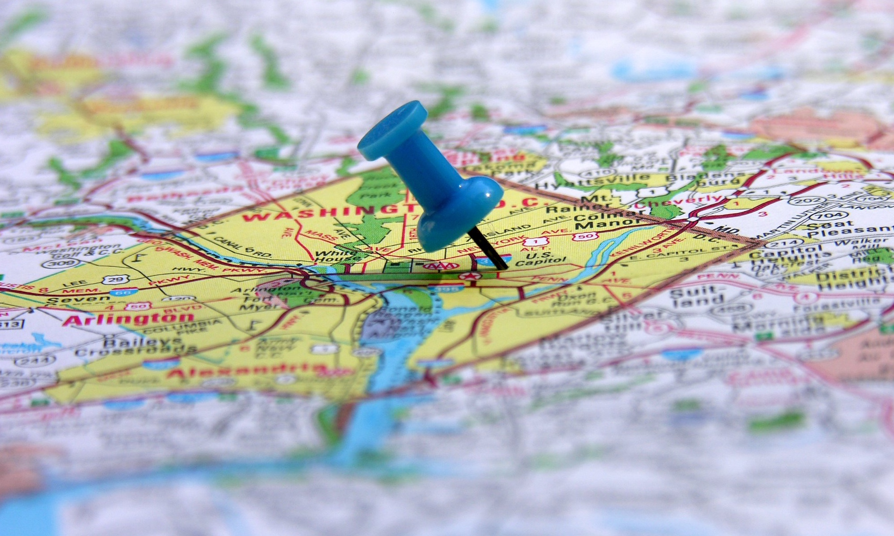

Generell informasjon og geografisk sporing
Alle elektroniske enheter som er koblet opp mot nett kan bli sporet, og det er mulig å finne den geografiske posisjonen til disse enhetene. Denne informasjonen er ofte til hjelp, og gjør hverdagen vår lettere, men den kan også bli misbrukt hvis man ikke er forsiktig med hvem man deler den med.

Sporing i ulike sosiale medier